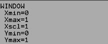

Topic: Volume of Rotation.
Objective: Find the volume of the 3D shape that would result from a series of "washers" created by f and g being rotated around an axis and then stacked end to end.
Big Idea: Find the area of 1 washer, then integrate over the bounds to find the Volume.
| where R is the larger function |
Because each function is being rotated around an "Axis of Rotation", the resulting shape will always be a circle.
For the sake of simplicity we will label the larger circle's radius "R" and the smaller circle's radius "r".
The resulting shape is typically a "washer" of area
Example 1: What is the volume of the solid formed by rotating
g(x) = x2
The outer function "R" is
The area of each washer is
g(x) = x2
Notice that both "R" and "r" are exactly 1 unit bigger. In general each radius is (R−AOR) and (r−AOR)
The area of each washer is now
General Process:
- Find your bounds. Set
f(x)=g(x) and find all point(s) of intersection.
- Determine which equation is farthest from the AOR (Axis of rotation).
Let R = [ f(x) − AOR ] (assuming f(x) is the farthest equation).
Let r = [ g(x) − AOR ] (assuming g(x) is the closer equation).
- Find the area of 1 washer.
Awasher = π[ R2 − r2 ] = π[ ( f(x) − AOR )2 − ( g(x) − AOR )2 ] -
Your Turn:
Problem 1:

2003 AP© Calculus AB. Problem # 1.
Let R be the shaded region bounded by the graphs of
Find the volume of the solid generated when R is revolved about the horizontal line
Don't let the fact that the region is labeled "R" confuse you. It has NOTHING to do with the "R" (bigger radius) you will use below. (You may use a calculator. )
|
Step 1 () |
Let (   |
|
|
Step 2 () |
Let
R = g(x) - 1
|
|
|
Step 3 () |
Let
r = f(x) - 1
|
|
|
Step 4 |
Let
h = 5[f(x) - g(x)]2
|
|
|
Step 5 () |
|
|
| Score: |
Extension:
Find the volume of the solid when R is rotated around the line y=|
Step 1 |
Let ( |
|
|
Step 2 () |
Let
R = f(x) −
|
|
|
Step 3 () |
Let
r = g(x) −
|
|
|
Step 4 |
Let |
|
|
Step 5 () |
|
|
| Score: |